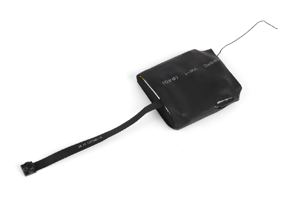
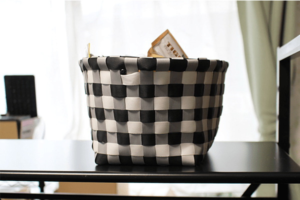
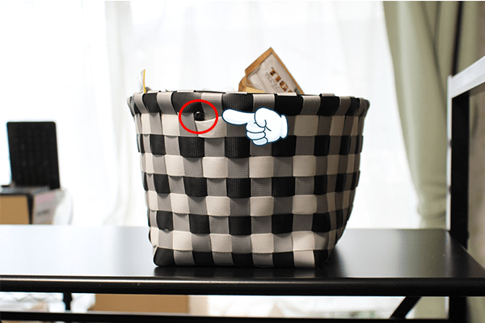

ユニット型カメラの設置場所

本格的に冬に突入ですね。
布団から出たくない毎朝ですが・・。当店は年中無休で営業しております！

早速ブログを更新していきます！今回の内容は・・・！
「ユニット型カメラの設置場所について」・・です！
まずはユニット型カメラのご紹介から！
"ユニット型"なんてあまり聞きなれない言葉かと思いますが、簡単に言うとカメラの基盤とレンズのみのセットのことを指します。
小型で軽量ながら、当店取扱商品の中でもトップクラスの【超大容量バッテリー】を内蔵し、
長時間の連続撮影が可能です！
(なんと最大で連続17時間超撮影できるモデルもあります・・！)
画質もとってもきれいで、簡単にリモコン操作ができる優れものなのです。
そんなユニット型カメラ最大の特徴は
【世界に一つだけのオリジナルな小型カメラを制作できること】です！
ユニット型カメラは、いわば小型カメラ・隠しカメラの元になっている部分です。
置時計型カメラや、腕時計型カメラなど、すべてのカモフラージュカメラの内部には
このユニット型カメラと同じ構造の基盤がは言っているとお考え下さい。
お客様のアイデア次第でどんな形にでもできるのが"ユニット型カメラ"最大の魅力です。
自由自在にカスタム可能なユニット型カメラ。
使い方次第では
凶悪事件を巻き起こすストーカー対策に
しつこいセクハラやパワハラの対策に
いじめ虐待、浮気の証拠撮影に
不在時の部屋の様子を記録できる防犯カメラに
・・・と、あらゆる場面にお役立て頂けます。
そんな、プロの探偵さんも使用しているほど、実力ナンバー1のユニット型カメラですが、
当店のお客様からは、基盤が剥き出しになっているので、どう使いこなしていいのか・・？
うまく設置できる方法を教えて欲しい。と多くのお問合せを頂きます。
お客様の声にお応えして、今回はユニット型カメラの設置場所について
いくつか例をあげてご紹介したいと思います！
皆様にお役立ていただけたら幸いです。
まずユニット型カメラの全体像はこんな感じです。↓ ↓
カメラ部分が剥き出しになっていてこのまま使用するのはちょっと、、
撮影しているのがバレバレですね・・(-_-;)
撮影設置場所としてのおすすめをいくつかご紹介しますね！
初心者向けの場所としては・・・
加工のしやすい、ティッシュ箱、お菓子や薬の空き箱、飲料缶、エコバック等がおすすめです。
上級者向けの場所としては・・・
ちょっと設置に工夫が必要な、観葉植物や置物、クリアファイルや事務用品、ラジコン等・・・
まさかと思うような場所に取り付けてもお使い頂けますよ！
実際に簡単に取り付けてみた状態がこちらです！よろしければご参考下さい。
 何の変哲もないカゴの隙間からカメラレンズをのぞかせてみました。
このカゴは特殊なものではなく、スタッフの私物です！
お客様の考え次第で使用方法、設置場所は無限大です！
用途に併せて設置場所を検討し、自分だけのオリジナルカメラを設置してみてはいかがでしょうか？
今回の主役、ユニット型カメラの詳細、ご購入は以下からご覧いただけます。
【ユニット型カメラ】商品ページへ！
当店では続々と新商品を販売しておりますので
是非、是非！毎日チェックして頂けたら嬉しいです！
当店HPは → こちら ← からご覧いただけます。
いかがでしたでしょうか・・・？
今回ご紹介した内容も実際にお客様よりお問い合わせを頂いた内容を元に、ご紹介しております
些細な事でも構いません！ご不明点がある場合には、いつでもご連絡下さい
メールやお問合せフォームからは24時間お問い合わせを受付中！
また、お電話でのお問い合わせも時間は限られておりますが受付中です！
当店スタッフが、誠意を持って対応致します・・！頑張ります・・！

ご相談・ご質問はこちらから!!（店舗サイトのお問合せページへ飛びます）
mail：shop@spy-online.jp
tel：042-719-3319 (対応時間10：00～12：00、13：00～17：00)
それでは今回はこの辺で失礼いたします
それではまた近々お会いしましょう・・！ヽ(´∀｀*)ﾉ=3=3